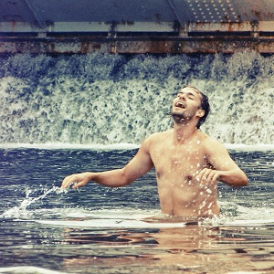

životě je asi
vše tak, jak to má asi být. Zážitková pedagogika mě dělá lepším a odvážnějším člověkem.
Nabízí mi výzvy, které ani v životě v zásadě neodmítám. České moře je má výzva.
Mé moře je úlitbou do fantazie, tam a zpět. Je nákupním vozíkem v těžkých chvílích života, pointless diskuse s prinicipy, které nejsou hned zjevné. Je to práce, kamarádi, krokodýli v punčoškách a diskuse nad ránem. Myslím si, že život sám osobě je dost rozvojová záležitost. Věřím, že když si něco budu hodně přát, tak se mi to splní. Se vším a doslova.
Petr “Nilda“ Nilius
Když kupuji dárky, tak dlouho nevím, co vlastně chci koupit, ale pak je to většinou ono. Jsem členem klubu bezpointových vypravěčů, klubu jemných a citlivých duší a jeden z Hochů od Bůhvíjaké řeky. Neumím číst v mapách, a taky proto jsem se nikdy neztratil. Mám rád víno, ženy, zpěv a svobodu myšlenek. Už pár let si „heavy metal“ nevybírá a v mémMé moře je úlitbou do fantazie, tam a zpět. Je nákupním vozíkem v těžkých chvílích života, pointless diskuse s prinicipy, které nejsou hned zjevné. Je to práce, kamarádi, krokodýli v punčoškách a diskuse nad ránem. Myslím si, že život sám osobě je dost rozvojová záležitost. Věřím, že když si něco budu hodně přát, tak se mi to splní. Se vším a doslova.